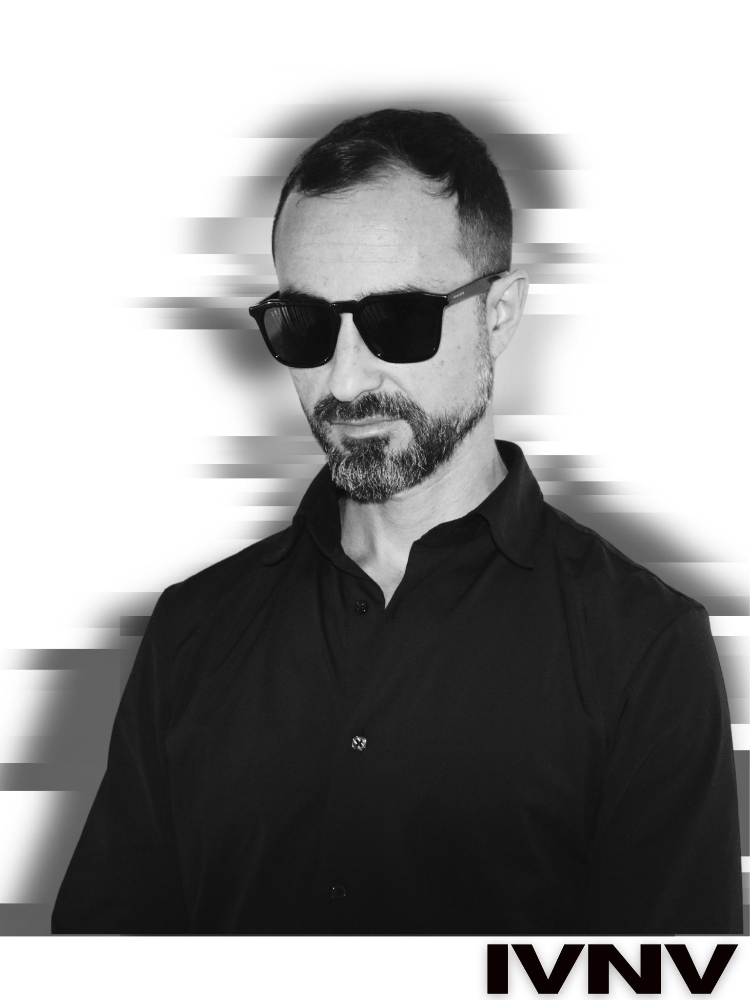

IVNV is an eclectic DJ from Barcelona, focusing on a techno style that ranges from raw and hypnotic to groovy and melodic.
His sets oscillate between deep, minimalist rhythms and more intense, energetic sounds.
Influenced by the European techno scene, IVNV continues to develop his sound through his sets and his work within Barcelona’s local scene.
